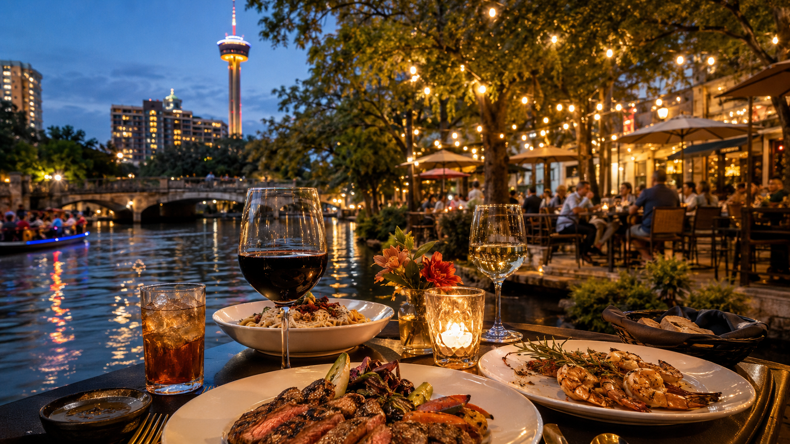
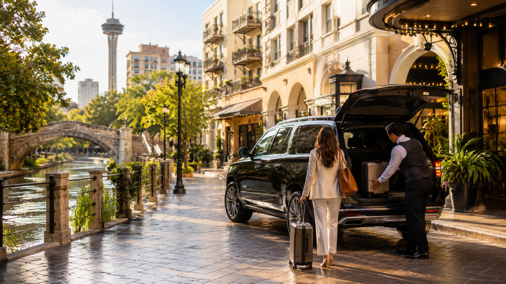

Routes
Routes that work in real life
Plans you can actually run downtown, around food, at resorts, and with kids — with backups baked in.
Built by The AI Plug
Where To Go SA
Where To Go SA helps visitors choose based on where they are, who they’re with, how much time they have, and what kind of night they want — food, downtown, resorts, family days, and route help included.
Right now
Pick your starting point — arrival, dinner, downtown, resort zone, family day, or transportation help.
Airport, hotel check-in, and the first food move — without wasting the night guessing.
Best for first hours in town, baggage days, resort handoffs
Open route →
Food picks tuned to cuisine, district, appetite, and River Walk energy.
Best for date nights, crews, conventions, picky eaters
Find dinner →Landmarks, loops, and one-night downtown plans — without a random zigzag.
Best for walking nights, hotels near the River Walk, tight schedules
Go downtown →Food, things to do, and realistic plans from JW Marriott, La Cantera, and Hill Country resort areas.
Best for pool days, Rim / La Cantera pace, sunset dinners
Resort guides →Theme parks, zoo and museum area, downtown with kids, and heat-smart timing.
Best for mixed ages, resort families, zoo / museum days
Family guide →Plan the route first. Airport, resort, downtown, convention, group, and night-out requests can move through smarter intake.
Best for airport arrivals, resort guests, convention nights, dinner chains
Plan transportation →Ask A Local. Tell us your situation and we’ll point you to the right move — downtown nights, food near your hotel, family plans, or transportation.
Guide directory
Know what you want? Open a full guide with more depth for food, downtown, family, resorts, and transportation.
Orientation hub: priorities first, every guide linked, one calm entry.
Open hub →
Main dinner picks by cuisine, with good backups when lines spike.
Browse Picks →Landmark loops built for tight nights.
Downtown guide →Plans and timing parents can actually run.
Family guide →
La Cantera, JW, Hyatt — stay close, short ride, or downtown / Pearl. SAT timing support when you need it.
Open resort guides →
Plan the route first for airport, resort, downtown, convention, group, and night-out moves.
Plan transportation →Why this guide
Distance, heat, timing, and who you’re with shape the move. Every page is built to get you to a clear next step.
Plans you can actually run downtown, around food, at resorts, and with kids — with backups baked in.
Tell us your situation, get a clear recommendation, and know what to do next — without a wall of options.
Thumb-friendly flows for sidewalks, Uber lines, pools, and last-minute resets — not desk PDF energy.
Ask A Local
Tell us where you are, who you’re with, what time it is, and what you’re trying to do. Get a practical answer you can use tonight.
Start with a prompt
Pick the situation closest to yours, or type your hotel, group, timing, and what kind of night you want.
Golden-hour logistics
Plan the route first. Airport, resort, downtown, convention, group, and night-out requests can move through smarter intake.
Where To Go SA can help you think through the route and send a request. Availability is not guaranteed. If timing is urgent, use Uber, Lyft, hotel transportation, taxi, or another licensed option.
BUILT BY THE AI PLUG
Where To Go SA is the live example of how modern marketing, content, local SEO, visitor answers, request paths, and AI-supported workflows can work together. The AI Plug helps businesses build that same kind of practical advantage through websites, SEO, content systems, paid campaign paths when appropriate, AI operators, automations, and follow-up workflows.
The businesses that learn AI now will have the advantage later.
Ask A Local helps people get useful San Antonio answers instead of hunting through random pages.
Restaurant, transportation, concierge, and business requests move through structured intake instead of scattered messages.
The same logic can help businesses answer common questions, organize requests, and improve follow-up with approved AI assistance.
Own or manage a restaurant? Request visibility or AI restaurant systems.